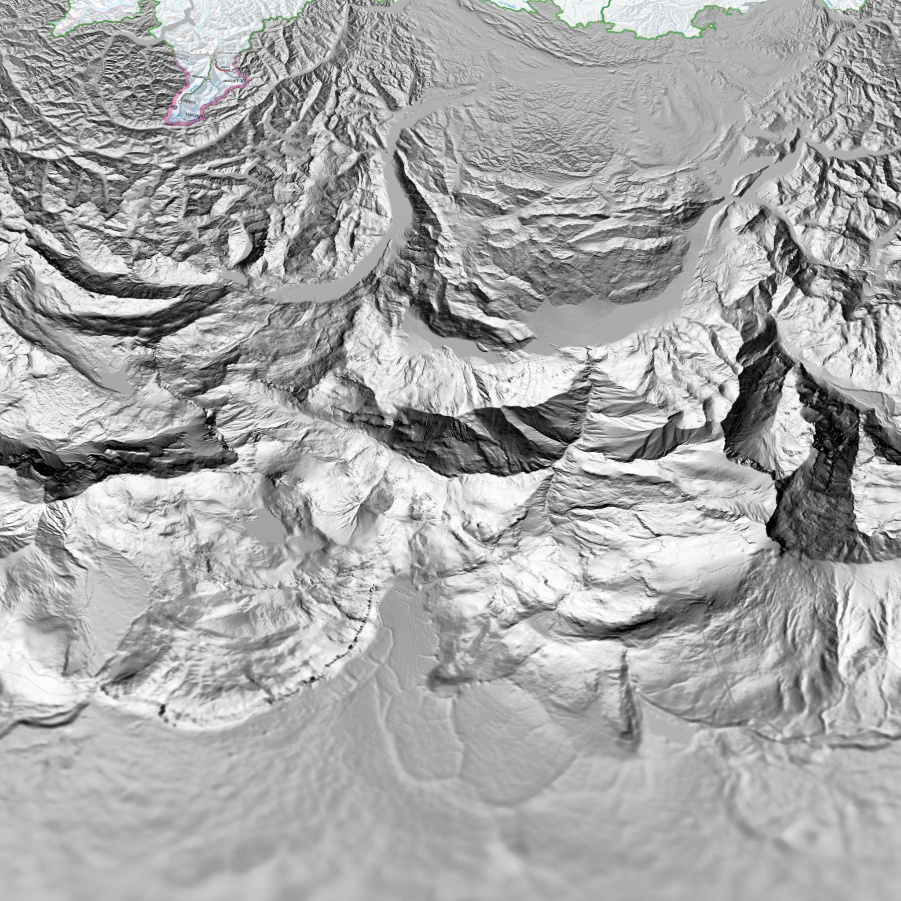
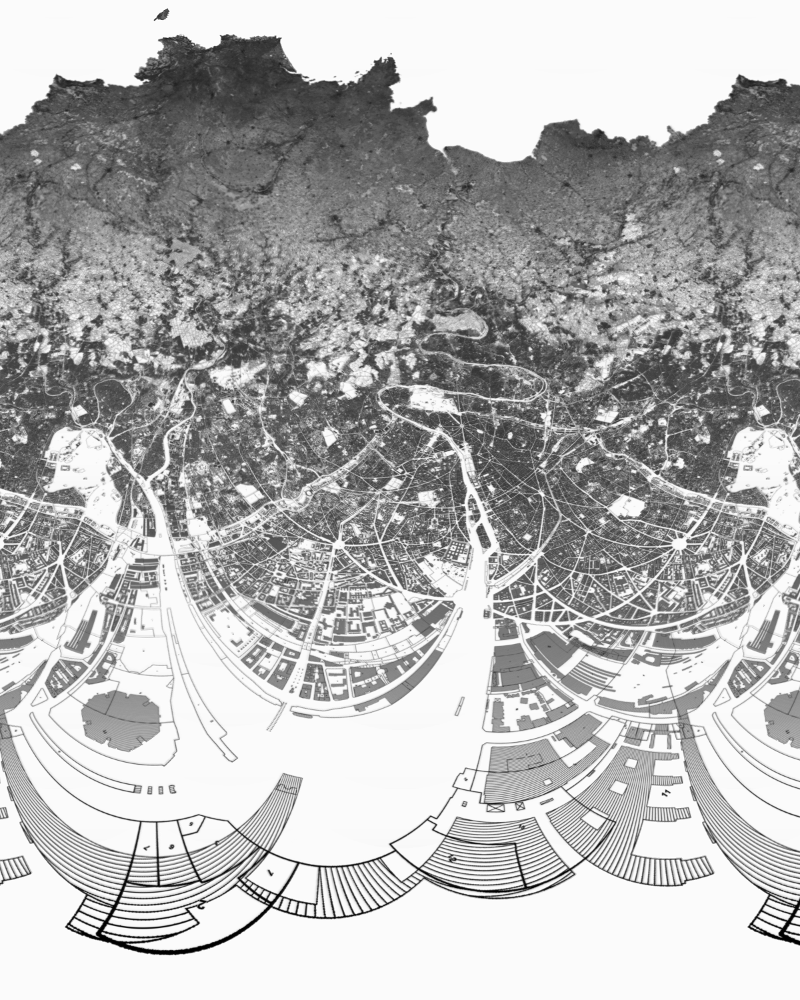

<http>
  <title>
    Exemples de Projections Polar-Log
  </title>
  <body>
    <a target="blank" href="proj1b.png">
      
    </a>
    <a target="blank" href="proj2b.png">
      
    </a>
    <a target="blank" href="proj3b.png">
      
    </a>
    <a target="blank" href="proj4b.png">
      
    </a><br>
    <a target="blank" href="proj5b.png">
      
    </a>
    <a target="blank" href="proj6b.png">
      
    </a>
    <a target="blank" href="proj7b.png">
      
    </a>
    <a target="blank" href="proj8b.png">
      
    </a><br><br>
    <a target="blank" href="carte_3.png">
      
    </a>
    <a target="blank" href="carte_3.png">
      
    </a>
  </body>
</http>
